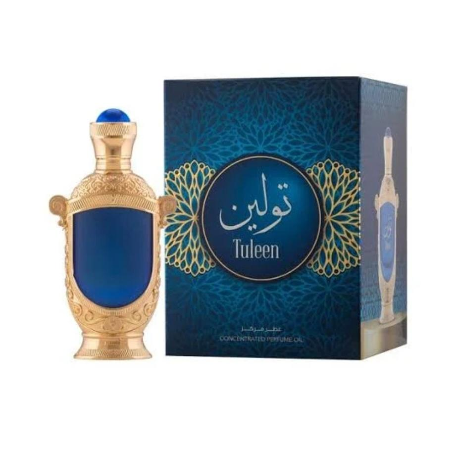

Lavi Perfumes

Perfumes em óleo • Masculino
Attar Árabe em Óleo - Hamidi Tuleen
20mlÂmbar, rosa e toranja se unem a um coração de pimenta preta, açafrão e raiz de orris sobre um fundo de sândalo, almíscar e baunilha, criando uma fragrância oriental amadeirada, luxuosa e misteriosamente envolvente.
R$ 389,90
Disponível no catálogo · Confirme o estoque antes de comprar
Atendimento e pedidos pelo WhatsApp. Enviamos para todo o Brasil; consulte frete, prazo de entrega e disponibilidade pelo CEP.
Produto: Attar Árabe em Óleo - Hamidi Tuleen
Volume: 20ml
Categoria: Perfumes em óleo • Masculino